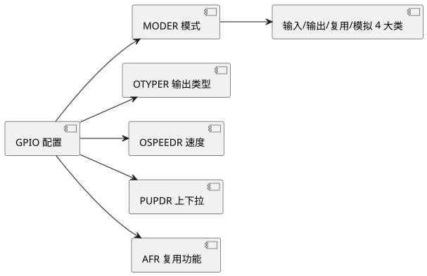

第 16 章 GPIO 与外部中断
学习目标
- 掌握 STM32 GPIO 的 8 种工作模式及适用场景
- 能够使用 CubeMX 配置 GPIO 输出/输入/复用/模拟
- 编写 GPIO 输出代码（LED 闪烁、流水灯）
- 编写 GPIO 输入代码（按键查询）与外部中断代码
- 掌握 HAL_GPIO 库函数的使用
- 对比 STM32 与 STC 8位单片机 的 GPIO 差异
16.1 GPIO 工作模式
STM32 每个 GPIO 端口由 MODER、OTYPER、OSPEEDR、PUPDR、IDR、ODR、BSRR、LCKR、AFR 等寄存器控制，可配置成 8 种工作模式。相比 8051 仅有准双向/推挽/输入/开漏 4 种，STM32 的灵活性大幅提升：
| 分类 | 模式 | MODER | OTYPER | PUPDR | 典型用途 |
|---|---|---|---|---|---|
| 输入 | 浮空输入 | 00 | - | 00 | SPI/I2C 总线空闲 |
| 输入 | 上拉输入 | 00 | - | 01 | 按键输入 |
| 输入 | 下拉输入 | 00 | - | 10 | 按键输入（另一端接 VCC） |
| 输出 | 推挽输出 | 01 | 0 | 00 | LED、SPI MOSI、PWM |
| 输出 | 开漏输出 | 01 | 1 | 00 | I2C、电平转换、线与 |
| 复用 | 复用推挽 | 10 | 0 | 00 | USART TX、SPI SCK |
| 复用 | 复用开漏 | 10 | 1 | 00 | I2C SCL/SDA |
| 模拟 | 模拟模式 | 11 | - | 00 | ADC 输入、DAC 输出、RTC 旁路 |
输出速度（OSPEEDR）分 4 档：Low 2 MHz、Medium 25 MHz、High 50 MHz、Very High 100 MHz。一般 LED/按键用 Low 即可，高速总线（SPI、USART）需 High。速度越高，IO 翻转边沿越陡，但高频谐波与 EMI 也越强，应按需选择。

查看 PlantUML 源码
@startuml
skinparam defaultFontName "Microsoft YaHei"
skinparam backgroundColor #ffffff
left to right direction
component "GPIO 配置" as A
component "MODER 模式" as B
component "OTYPER 输出类型" as C
component "OSPEEDR 速度" as D
component "PUPDR 上下拉" as E
component "AFR 复用功能" as F
component "输入/输出/复用/模拟 4 大类" as G
A --> B
A --> C
A --> D
A --> E
A --> F
B --> G
@enduml16.2 CubeMX 配置 GPIO
在 CubeMX Pinout 视图中，点击芯片图形上的引脚会弹出可选模式菜单；或在左侧 System Core → GPIO 列表中配置每个引脚。配置 LED 输出与按键输入的典型步骤：
- 点击 PA6 → 选 GPIO_Output → GPIO_Output 标签页：标签 LED1、Pull 默认 No Pull、Speed Low、默认电平 Low。
- 点击 PE4 → 选 GPIO_Input → Pull-Down（按下接 VCC）或 Pull-Up（按下接 GND）。
- 若使用按键外部中断：PE4 改为 GPIO_EXTI → GPIO 模式选 External Interrupt Mode with Rising edge（或 Falling/Rising_Falling）→ NVIC 标签勾选 EXTI line 4 interrupt。
- 引脚标签（User Label）会被 CubeMX 转换为宏定义（如 LED1_Pin / LED1_GPIO_Port），代码中可直接使用，便于移植。
16.3 GPIO 输出 - LED 闪烁与流水灯
STM32 GPIO 输出驱动能力强（单引脚 25 mA，总灌电流 150 mA），可直接驱动 LED（需串 220-510 Ω 限流电阻）。下例实现 PA6/PA7/PA8/PA9 四个 LED 流水灯：
/* USER CODE BEGIN 0 */
#define LED_NUM 4
const uint16_t LED_Pins[LED_NUM] = {GPIO_PIN_6, GPIO_PIN_7, GPIO_PIN_8, GPIO_PIN_9};
void LED_WaterFlow(uint32_t delay_ms)
{
for (int i = 0; i < LED_NUM; i++) {
HAL_GPIO_WritePin(GPIOA, LED_Pins[i], GPIO_PIN_SET);
HAL_Delay(delay_ms);
HAL_GPIO_WritePin(GPIOA, LED_Pins[i], GPIO_PIN_RESET);
}
}
/* USER CODE END 0 */
/* USER CODE BEGIN WHILE */
while (1)
{
LED_WaterFlow(100); /* 100 ms 流水 */
/* USER CODE END WHILE */
/* USER CODE BEGIN 3 */
}
/* USER CODE END 3 */
相比 STC 用 P1 = 0xFE; delay(); P1 = 0xFD; 直接对端口写整字节，STM32 因端口数据宽度（16 位）与外设结构差异，HAL 库采用 HAL_GPIO_WritePin 单引脚操作；若需一次写整个端口，可使用 GPIOA->ODR = 0x00F0; 寄存器方式。
16.4 GPIO 输入 - 按键查询
下例实现 PE4 按键查询控制 LED 翻转，含软件消抖：
/* USER CODE BEGIN WHILE */
while (1)
{
if (HAL_GPIO_ReadPin(GPIOE, GPIO_PIN_4) == GPIO_PIN_SET) { /* 检测按下 */
HAL_Delay(20); /* 20 ms 消抖 */
if (HAL_GPIO_ReadPin(GPIOE, GPIO_PIN_4) == GPIO_PIN_SET) {
HAL_GPIO_TogglePin(GPIOA, GPIO_PIN_6); /* 翻转 LED */
while (HAL_GPIO_ReadPin(GPIOE, GPIO_PIN_4) == GPIO_PIN_SET); /* 等待释放 */
}
}
/* USER CODE END WHILE */
/* USER CODE BEGIN 3 */
}
/* USER CODE END 3 */
查询方式简单但占用主循环 CPU，不适合多任务场景。若需实时响应，应使用外部中断。
16.5 外部中断 EXTI 配置
STM32F407 共有 16 条 EXTI 线（EXTI0~EXTI15），分别对应 PAx~PIx 的 x 号引脚（同一编号同时只能选一个端口）。EXTI5~9 共享 EXTI9_5_IRQn，EXTI10~15 共享 EXTI15_10_IRQn，EXTI0~4 各自独立中断。配置步骤：
- CubeMX 中将 PE4 设为 GPIO_EXTI，模式选 Rising/Falling/Falling_Rising。
- NVIC 设置中勾选 EXTI line 4 interrupt，优先级默认 5/0。
- 生成代码后 CubeMX 自动在 stm32f4xx_it.c 中加入
EXTI4_IRQHandler()，其调用HAL_GPIO_EXTI_IRQHandler(GPIO_PIN_4)，后者清标志并回调HAL_GPIO_EXTI_Callback。 - 在 main.c USER CODE 区重写回调函数实现业务逻辑。
/* USER CODE BEGIN 4 */
void HAL_GPIO_EXTI_Callback(uint16_t GPIO_Pin)
{
if (GPIO_Pin == GPIO_PIN_4) {
HAL_GPIO_TogglePin(GPIOA, GPIO_PIN_6);
printf("KEY4 pressed, LED toggled\r\n");
} else if (GPIO_Pin == GPIO_PIN_5) {
/* 其他引脚中断处理 */
}
}
/* USER CODE END 4 */
中断方式下按键响应即时，但仍有抖动问题，可在 ISR 中启动一个软定时器，10-20 ms 后再读引脚确认；或在 EXTI 后改用定时器去抖。
16.6 HAL_GPIO 库函数详解
| 函数 | 原型 | 作用 |
|---|---|---|
| HAL_GPIO_ReadPin | GPIO_PinState HAL_GPIO_ReadPin(GPIO_TypeDef* GPIOx, uint16_t GPIO_Pin) | 读 IDR 寄存器对应位，返回 PIN_RESET/PIN_SET |
| HAL_GPIO_WritePin | void HAL_GPIO_WritePin(GPIO_TypeDef* GPIOx, uint16_t GPIO_Pin, GPIO_PinState PinState) | 写 BSRR 寄存器，原子操作 |
| HAL_GPIO_TogglePin | void HAL_GPIO_TogglePin(GPIO_TypeDef* GPIOx, uint16_t GPIO_Pin) | 翻转引脚电平 |
| HAL_GPIO_LockPin | HAL_StatusTypeDef HAL_GPIO_LockPin(GPIO_TypeDef* GPIOx, uint16_t GPIO_Pin) | 锁定引脚配置寄存器，下次复位前不可改 |
| HAL_GPIO_DeInit | void HAL_GPIO_DeInit(GPIO_TypeDef* GPIOx, uint16_t GPIO_Pin) | 恢复引脚为默认状态 |
| HAL_GPIO_EXTI_IRQHandler | void HAL_GPIO_EXTI_IRQHandler(uint16_t GPIO_Pin) | EXTI ISR 入口，清 PR 标志 + 调回调 |
| HAL_GPIO_EXTI_Callback | __weak void HAL_GPIO_EXTI_Callback(uint16_t GPIO_Pin) | 用户重写的弱回调 |
注意 HAL_GPIO_WritePin 底层写 BSRR（端口位设置/清除寄存器），是原子操作，不会因并发访问 ODR 引起竞争；若直接写 ODR 寄存器则需自行加锁或使用 __disable_irq()/__enable_irq() 保护。
16.7 与 STC 的 GPIO 对比
| 对比项 | STC89C52RC | STM32F407 |
|---|---|---|
| 端口数 | P0/P1/P2/P3 共 32 引脚 | PA/PB/PC/PD/PE 多组，LQFP100 共 82 个 I/O |
| 工作模式 | 准双向、推挽、开漏、高阻 4 种 | 8 种，含上下拉、复用、模拟 |
| 输出驱动 | 约 20 mA | 25 mA 单引脚，可吸收 150 mA 总 |
| 电平兼容 | 5V TTL | 3.3V，多数引脚容忍 5V 输入 |
| 翻转速率 | 固定（约 ns 级） | 2-100 MHz 可配 |
| 复用功能 | 固定映射 | AF 任意切换，部分引脚多至 16 种功能 |
| 外部中断 | INT0/INT2 共 2 个 | EXTI0-15 共 16 条线 |
| 开发方式 | 寄存器/P1 整字节操作 | HAL 单引脚或 ODR 整字 |
本章小结
- STM32 GPIO 由 MODER/OTYPER/OSPEEDR/PUPDR/AFR 寄存器配置，支持 8 种工作模式，灵活性远超 8051。
- CubeMX 图形化配置引脚模式与标签，自动生成初始化代码与宏定义。
- HAL_GPIO_WritePin/ReadPin/TogglePin 是 GPIO 操作三件套，底层基于 BSRR 原子操作。
- 外部中断 EXTI 共 16 条线，EXTI5-9 与 EXTI10-15 共享中断向量；HAL 通过 __weak 回调机制将事件交还用户处理。
- STM32 GPIO 在端口数、模式、速率、复用灵活性上全面优于 STC，但配置也更复杂。
思考题与习题
- 列出 STM32 GPIO 的 8 种工作模式，并各举一个典型应用场景。
- 开漏输出与推挽输出在电路结构与应用上有何区别？为什么 I2C 必须用开漏？
- 使用 CubeMX 配置 PA6/PA7/PA8/PA9 为输出，编写 HAL 代码实现 4 路 LED 流水灯，每路点亮 100 ms。
- 编写按键查询代码，要求实现软件消抖，并区分单击与双击。
- EXTI9_5 中断为何共享一个中断向量？如何在中断服务函数中区分具体哪个引脚？
- 对比 STC 的 INT0/INT1 与 STM32 的 EXTI，分别从数量、配置、响应延迟角度分析差异。
参考文献
- ST 官方. STM32F405/415/407/417 参考手册 RM0090 [Z]. 2024. https://www.st.com/
- ST 官方. STM32F4xx HAL User Manual UM1025 [Z]. 2024. https://www.st.com/
- ST 官方. STM32 GPIO application note AN4899 [Z]. 2024. https://www.st.com/
- 正点原子. STM32F4 开发指南——库函数版本 [M]. 北京：北京航空航天大学出版社, 2020.
- 野火嵌入式. STM32 HAL 库开发实战指南 [M]. 北京：电子工业出版社, 2020.